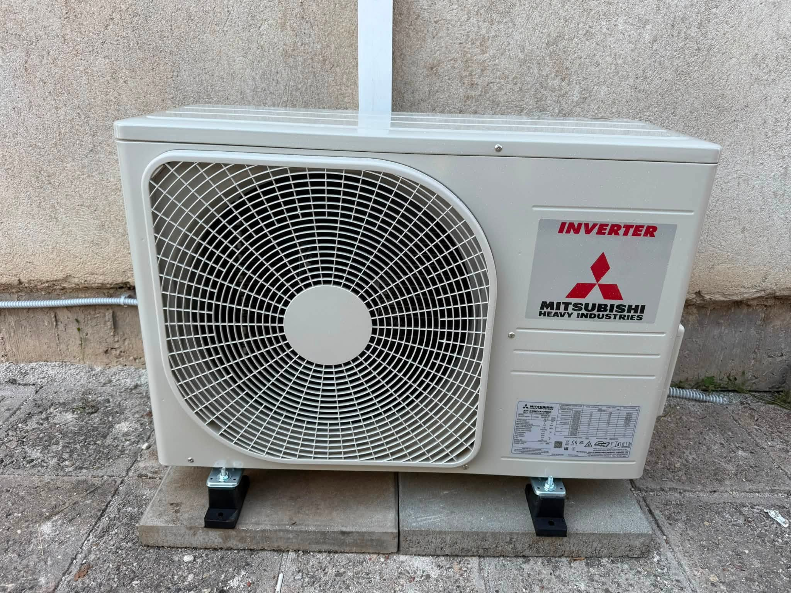

Монтаж климатик в Нови Искър — какво включваме
За обекти в Нови Искър осигуряваме оглед, оферта и изпълнение на климатици. Работим прозрачно: ясен обхват, качествено оборудване и настройка до готовност за ползване.
Нови Искър и северните квартали са удобни за дневен монтаж от Костинброд с ясен прозорец за доставка.
- Оглед на обекта в Нови Искър
- Индивидуално техническо решение
- Доставка, монтаж и пускане
- Инструктаж след пускане
Защо локална фирма от Костинброд
Костинброд е стратегическа точка за София и София област — бърз достъп до Нови Искър и съседните населени места.
Често задавани въпроси
Правите ли монтаж климатик в Нови Искър?
Да. Мони Терм обслужва Нови Искър и район на София. Обадете се на 0886 391 729.
Има ли особености в Нови Искър?
Нови Искър и северните квартали са удобни за дневен монтаж от Костинброд с ясен прозорец за доставка.
Откъде идва екипът?
Базата ни е в Костинброд — удобно за Нови Искър и София област.
Как се образува цената?
Индивидуална оферта след оглед на обекта.